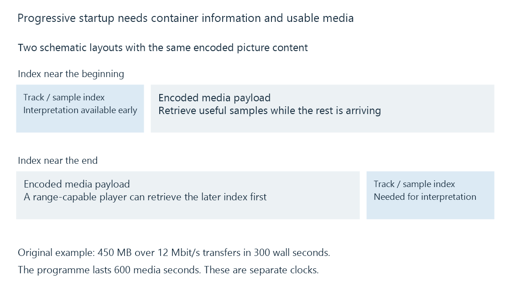

Progressive download and playback before completion
Progressive download plays a media resource while its bytes are still arriving, using container information and buffered data to prepare the next presentation.
A movie does not have to arrive completely before the player shows its first picture. With progressive download, the player obtains a media resource over HTTP and presents the part for which it already has enough information and data. Retrieval and viewing overlap.
This is a delivery arrangement. In an Emby Direct Play session, a player may receive the original media this way. The term does not say whether the resource is a library original or a prepared version.
The player needs more than the first bytes
A media container describes how encoded streams, their timestamps and their locations relate. The player uses that information to find samples, initialize decoders and schedule presentation.
For an ordinary MP4, the moov box carries movie and track information, including sample tables. If that information is near the beginning, a player can discover the layout early. If it is at the end, startup may require retrieving that part first. An HTTP range request can allow this without transferring everything preceding it.

FFmpeg's faststart option for suitable non-fragmented MP4 output moves the index information toward the beginning. It changes packaging; it does not reduce the encoded video's bitrate or add codec support to the receiving device. Fragmented delivery organizes initialization and media differently.
The consequence is practical: two files with the same codecs and bitrate can start differently because the information needed to interpret their bytes appears in different places.
Arrival and viewing run on different clocks
Consider an original simplified example: a 600-second resource contains 450,000,000 bytes of media and packaging, and the connection sustains 12,000,000 bits per second.
450,000,000 × 8 / 12,000,000 = 300 seconds to transfer
450,000,000 × 8 / 600 = 6,000,000 bits per media second on average
If bytes needed for each next interval arrive in time, the transfer can finish halfway through a ten-minute viewing. The player may nevertheless start much earlier, after establishing its initial buffer reserve.
This calculation assumes a stable useful transfer rate. Real media sizes vary by scene, and retrieval can be interrupted or scheduled in bursts. Knowing the average rate does not identify how much usable media exists before the next gap.
| Observation | What it describes |
|---|---|
| Bytes already received | Transfer progress for the resource |
| Buffered media intervals | Time ranges the player has retained for use |
| Current playback position | The programme moment being presented |
| Complete local copy | A storage result, if the application retains the entire resource |
A player may discard earlier bytes or cease retrieval after playback stops. A progress bar approaching the end is therefore not evidence that the app has created a permanent offline copy.
A jump can start another retrieval
Seeking changes which portion is useful next. A player that supports the file layout and server range behavior can request the container information and encoded data needed around the destination rather than waiting for all intervening bytes.
The required region can begin before the requested picture because decoding may need an earlier access point. That relationship is developed in Seeking during streaming. A jump to a later scene can consequently create a new request and a short readiness wait even though the first part of the movie was already playing.
See Also
- HTTP range requests for media resources
- Segmented streaming and addressable media intervals
- Buffering, ready media and playback reserve
- Direct Play in Emby
- Containers and Codecs